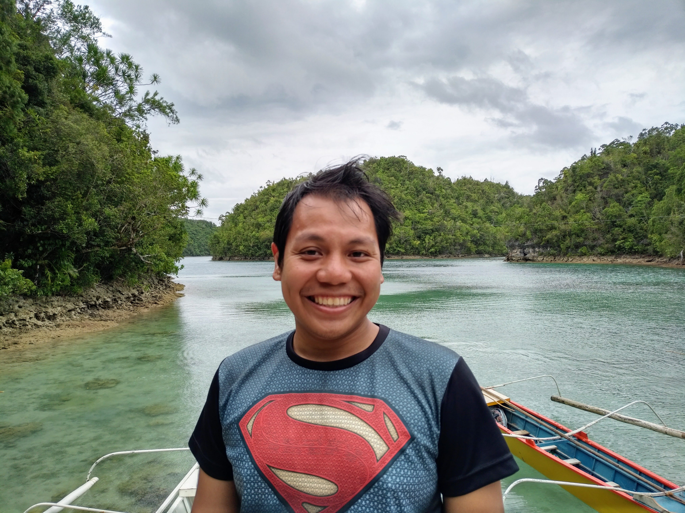

I am a Research Associate at the Bennett Institute for Public Policy, University of Cambridge. I am also a Research Affiliate of the Economic Statistics Centre of Excellence and The Productivity Institute.
My research interests include Applied Microeconomics, Economic Measurement, Productivity, and Innovation. I have over seven years of experience in economic measurement through my work with the National Accounts team of the Philippine Statistics Authority.
I received my PhD in Economics at King's College London. I hold master's degrees in Economics from the University of Adelaide and the University of Santo Tomas.
Email: jlp87@cam.ac.uk

Working papers and publications on digital economy measurement, intangible assets, depreciation, and economic statistics.
→Academic positions, education, affiliations, and professional experience spanning Cambridge, KCL, and the Philippine Statistics Authority.
→Courses taught at Cambridge, UCL, King's College London, University of Adelaide, and several Philippine universities.
→Applied research and policy work, including national accounts compilation at the Philippine Statistics Authority and consulting work.
→Working papers and publications on digital economy measurement, intangible assets, and economic statistics.
Academic positions, education, affiliations, and research experience.
Bennett Institute for Public Policy, University of Cambridge
Supervisor: Professor Dame Diane Coyle
Economic Statistics Centre of Excellence (ESCoE)
The Productivity Institute
Global INTAN-Invest Project (WIPO & Luiss Business School)
King's College London
University of Adelaide
University of Santo Tomas
Philippine Statistics Authority — Leading GDP compilation and national accounts methodology
Full CV available upon request — contact jlp87@cam.ac.uk
Courses taught at universities across the United Kingdom, Australia, and the Philippines.
Selected applied research projects, policy work, and professional contributions.
Designing and fielding a survey (n=1,000) to measure the expectation–capability gap in AI adoption among UK professional services firms. Commissioned through YouGov.
Consulting for WIPO and Luiss Business School on intangible investment measurement across countries, including the Philippines intangibles project.
Estimating depreciation rates for data assets and using a difference-in-differences design exploiting ChatGPT's November 2022 launch as an exogenous shock. With David Thesmar (Stanford).
Led GDP compilation and national accounts methodology for over seven years, contributing to official statistics and measurement frameworks for the Philippines.
📁
Additional portfolio materials — reports, presentations, and policy briefs — available upon request.
Contact: jlp87@cam.ac.uk
Press coverage, interviews, podcast appearances, and public commentary.
📰
Media appearances and press coverage will be listed here.
For press enquiries, please contact jlp87@cam.ac.uk.
You can also follow my public commentary on Twitter / X and Bluesky.